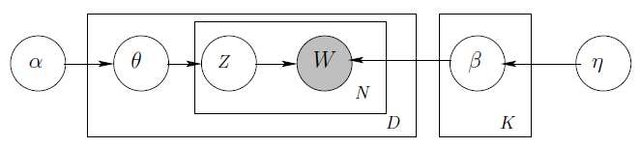
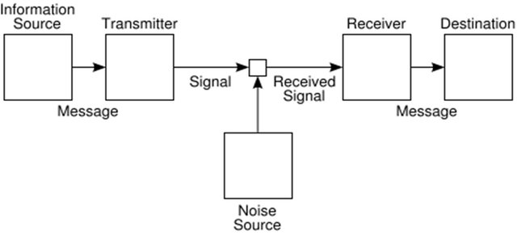

Conclusion
UVA DS 5559
Raf Alvarado
30 April 2019
Business
- Project data products due today by 5:00
- Contact me if you need more time
- Project final reports due next Tuesday, May 7th at noon
- Again, contact me if you think you will be late
Review
- Supervised methods useful in ETA
- Document classification has many uses, e.g. genre prediction
- Entire field of stylometrics seeks to predict authorship, etc.
- The Bayesian approach goes beyond the Naïve Bayes classifier
- Frames machine learning in terms of probability theory
- Prediction as posterior estimation
- The importance of likelihoods
Likelihoods show the relationship between
known causes and effects

Each node’s outgoing arrows represent likelihoods
Prediction involves going against the arrow of information
In the case of text, we have seen that
topics play the role of causes
Topics (Language Models) \(\rightarrow\) Documents

If topics don’t exist, it is necessary to invent them
Supervised
methods
Infers parts from whole
Informed by human judgment
Goal is prediction
Truth
Unsupervised
methods
Infers whole from parts
Informs human judgement
Goal is perception
Meaning (Sense)
(meaning precedes truth)
Making sense of data

The Owl of Minerva
“The Owl of Minerva only flies at dusk.”
– G.F.W. Hegel

(We really understand things only after they are finished)
Text analytics requires domain knowledge
about languange and culture
Some sources of domain knowledge:
Linguistics
Hermeneutics
Literary Criticism
Text Criticism
Sociolinguistics
From linguistics we know:
language is composed of grammar and discourse
Grammar: finite generative rules
Discourse: infinite generated outcomes
From hermeneutics and text criticism we know:
Written documents, as fixed discourse, exhibit a discursive structure
E.g. Corpus, Book, Chapter, Verse, Sentence
The utterance is the elementary unit of discourse
Meaning emerges in the assertion of something about somethig (the “said”)
Reference is an act, a form of situated action
“Meanings” as we understand them are recordings of usages in dictionaries
But dictionaries do not capture the generative mechanism of language
From hermeneutics and sociolinguistics we know:
The generative mechanism of language
is bound up with culture
Culture consists of ethos and worldview
encoded in symbols shared by communities
Language use is shaped this deeper structure
(non-ostensive reference)

From these domains, an ontology of text emerges
language
\(\downarrow\)
culture
\(\downarrow\)
text
The core methods of text analytics map onto these levels
Language
Spelling (phonemes), vocabulary, grammar, etc.
modeled by
N-gram Language Models
(characters and strings)
NLP annotations (POS, etc.)
Culture
Topics, sentiment, analogies
modeled by
Topic Models
Sentiment Lexicons
Word embeddings
Texts
Discursive units, sequential structure
modeled by
OHCO
relational data model
Vector Space Representations
Each level, from language to document, involves an increasing amount of choice
Therefore, each level involves increasing information
(since information is choice)
Observations
Observation 1
Information theory is fundamental to text analytics
Information theory models both the generative and the generated levels of language
Information theory provides a unified language into which most of text analytics can be translated

Message = Text
Observation 2
The Library of Babel is a counter-factual narrative about information
It posits a world in which information is absent
A world of maximum entropy
(where every possibility is equally probable)
Observation 3
Texts are sensors
They are transducers of external social events and internal pyschological dispositions
(Relative to the author)
Text analytic methods surface the “images”
left by these causes
Observation 4
The information deposited by these images is of two kinds:
1 Structural and static
2 Sequential and dynamic
Structural information consists of things like language categories, analogies, principal components, topics, and networks of these things
These analytical artifacts reflect, directly or indirectly,
fixed cognitive structures
These structures can be investigated through
measures of similarity and contiguity
i.e. machine learning acts as an associationist Hume Machine
Sequential information consists of events and other time-based information
These reflect life events and social processes
Collections of texts over time reveal these changes, as in newspapers or corpora over time
Observation 5
Narratives are reduced representations of social process
Narrative strucutres exist in fiction and non-fiction
Fiction is True!


Plus Delta
Please fill out the Plus Delta form on the menu of the Collab site